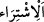

kişi, eğer o iki şâhidin hainlik yaptıklarından ve terekeden bir şey aldıklarından
şüphelenirse, ancak o zaman onları alıkor ve onlara Allah adına yemin ettirirsiniz.
“Namazdan sonra,” ikindi namazından sonra demektir. İlk olarak ikindi namazından
sonra yemin edildiği için sonradan da yemin için bu vakit tayin edilmiştir. Çünkü bu
vakit, insanların bir araya geldikleri, gece ve gündüz meleklerinin nöbet değişikliği
yaptıkları, ehl-i îmanın tazim gösterdikleri ve yalan yere yemin etmeye çekindikleri bir
vakittir. Ayrıca Rasûlullah (s.a.)’in de yemin ettireceği kişileri bu vakitte yemin ettirdiği
rivayet edilmiştir.[61]
İmam Şafii demiştir ki: “Kan dökülmesi (adam öldürme), talâk, köle azadı ve 200
dirhem kıymetine ulaşan mal konularındaki yeminler önemli zaman ve mekanlarla
pekiştirilir. Mekke’de ikindi namazından sonra ve Rükn-i Yemânî ile Makâm-ı İbrâhim
arasında, Medîne’de Minber’in yanında, Kudüs’te hacer-i muallakın yanında, diğer
mekanlarda ise en şerefli mescitte ettirilir.” Ebû Hanîfe’ye göre ise yemin belli zaman
ve mekanlara tahsis edilmez.
“Akraba bile olsa yeminlerimizi hiçbir paraya satmayacağız”
Âyetteki “__WORD__” bir malı para karşılığında değişmek yani, para karşılığında o malı
satmaktır. Fakat bu ifade daha sonra istiâre yoluyla aldığına rağbet ederek, verdiğinden
yüz çevirerek; insanın bir şeyi almak için sahip olduğu maddî veya manevî bir şeyi
elinden çıkarması anlamında kullanılmıştır. Aslında gerçek alış verişte de muteber olan
budur.
Mânâ ise şöyle olmuş olur: Allah‘a olan saygımızı bir tarafa bırakıp da, yalan yere
yemin etmek suretiyle O’nun yasağını çiğneyerek, şahsımız için dünyalık bir menfaati
almayı tercih etmeyiz. Yani biz mal veya dünyaya tamah sebebiyle Allah’a yalan yere
yemin etmeyiz” demektir.
“Yakınımız dahi olsa” ifadesinde kastedilen kişi, söz konusu yeminin kendisi için
yapıldığı, ölen kimsedir. “Yakınlıktan maksat ise arada kan bağı bulunan yakın
akrabadır. Bu şâhitlerin, yalan yere yemin etmekten ne denli uzak olduklarını mübalağalı
bir ifadeyle ortaya koymaktadır. Sanki şâhitler şöyle söylemiş olmaktadırlar: “Biz
Allah’ın yüce isminin saygınlığını zedeleyip, bunun karşılığında şahsımız için bir bedel
ve menfaati, bu bedele yakınlarımızı gözetme de eklenmiş olsa dahi tercih edecek
değiliz.”
Dersen ki: Her ne kadar akrabayı gözetmek bu işe karıştırılmamışsa da ondan daha
ağır basan ve insanı yalan yemine sürüklemede daha etkili olan şahsi menfaat işin içine
karışmıştır. O zaman şâhitlerin kastettikleri suçsuz ve masum olduklarını mübalağalı
olarak ifade etmeleri gerçekleşmemiş olur. Benim cevabım şu olur “Şahitlerin şahsî
menfaatleri her ne kadar yakınlarını gözetmelerinden daha ehemmiyetli ise de, şahsî
menfaatler malla doğrudan değil, dolaylı olarak bağlantılıdır.
“Allah adına yaptığımız şâhitliği gizlemeyeceğiz” Şahitliğin Allah’a izâfe edilmesi
şâhitliği emreden, ona itina gösterilmesini, saklanılmamasını ve çarpıtılarak zayi
edilmemesini isteyen O olduğu içindir.